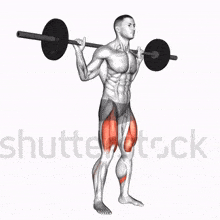
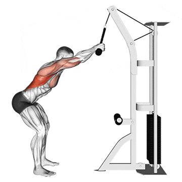

Agachamento
- Fique de pé com os pés afastados na largura dos ombros.
- Agache até que suas coxas fiquem paralelas ao chão.
- Volte à posição inicial de forma controlada.

Supino
- Deite-se em um banco plano, segurando a barra com as mãos na largura dos ombros.
- Baixe a barra até o peito e depois empurre-a de volta para cima.
- Realize o movimento de forma controlada.

Puxada na Frente
- Sente-se na máquina de puxada com as costas retas.
- Segure a barra com as mãos afastadas na largura dos ombros.
- Traga a barra até o peito e depois retorne lentamente à posição inicial.
Leg Press
- Sentado na máquina de leg press, coloque os pés na plataforma.
- Empurre a plataforma até as pernas ficarem quase esticadas.
- Desça lentamente e repita o movimento.

Rosca de Bíceps
- Fique em pé com os pés afastados na largura dos ombros.
- Segure um halter em cada mão com as palmas voltadas para cima.
- Flexione os cotovelos e levante os halteres até a altura dos ombros.

Tríceps na Polia
- Fique em pé em frente a uma máquina de polia alta.
- Segure a barra com as palmas voltadas para baixo.
- Empurre a barra para baixo, estendendo completamente os cotovelos.

Abdominal
- Deite-se de costas, com os joelhos flexionados e os pés no chão.
- Levante o tronco, aproximando os ombros dos joelhos.
- Volte lentamente à posição inicial.

Remada
- Sente-se na máquina de remada com os pés firmemente posicionados.
- Puxe a barra em direção ao seu torso, mantendo as costas retas.
- Retorne lentamente à posição inicial.